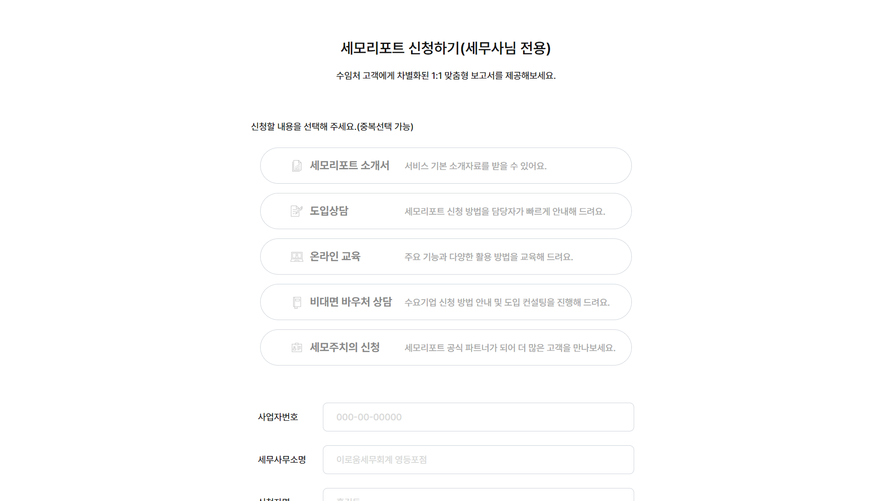

세무사들에게 세모리포트를 홍보하기 위한 세모리포트 세무사용 홈페이지
aos.js를 활용한 fadeIn 동적 요소를 통해 사용자는 흥미를 유지하며 웹사이트의 내용을 탐색

유효성 검사로직 및 입력값 ajax 통신
모바일, 태블릿 반응형
| 구분 | 기준 | 비고 |
|---|---|---|
| 디바이스 |
PC Mobile(Android/Ios) Tablet |
|
| 반응형 중단점(Break Point) | Screen Small-Width 360px | |
| HTML 파일명 | index.html |
| 구분 | 폴더명 | 하위폴더 및 파일 | 비고 |
|---|---|---|---|
| HTML 마크업 페이지 | /SEMO2_0/SEMOR_HP |
index.html html/HP000.html html/land_inrt_001C.html html/taxAccountant.html |
|
| HTML Index | index.html | ||
| 공통 CSS 01.(라이브러리) | css/ |
swiper-bundle.min.css aos.css |
|
| 업무 CSS. | css/ | semoR_pc.css | |
| 공통 Font 01. | font/ |
Pretendard-Medium.woff2 Pretendard-SemiBold.woff2 Pretendard-Bold.woff2 |
|
| 이미지 리소스 01. | img/ | ||
| 업무 JS 01. | js/ | semo.api.js | |
| UX용 JS 01. | js/ | semoR_ui.js | |
| UX용 JS 02.(라이브러리) | js/ |
jquery-3.5.1.min.js swiper-bundle.min.js aos.js |